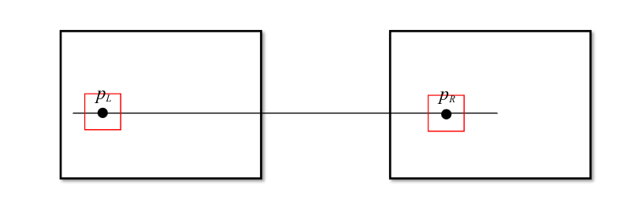
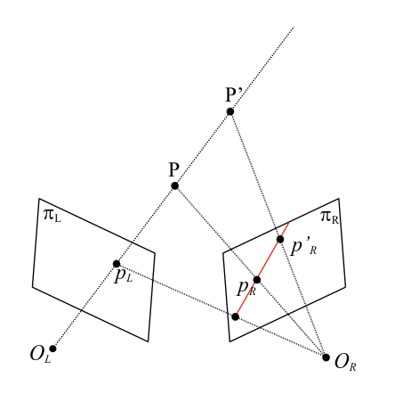

Stereo geometry
A set of techniques to infer data from a set of photos from which we do not know the correspondence between two points.
Stereo matching
We can infer how are the two images related by looking on the horizontal line from a starting point on the first image and search it on the same line in the second image (better if we use a window around the points). 
But what if the two photos are no longer aligend? The solution is to project the like related to the point in the right plane (or viceversa) and search across that line. The line is called Epipolar line. 
The issue with this method is that we need to know the transformation between the two cameras.
Rectification
Searching through oblique epipolar lines is computationally harder. In order to ease the problem, we can rectify the images (rotate them) in order to convert epipolar geometry to standard geometry.